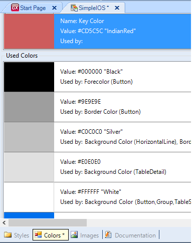

Previous version (X Evolution 2)The Key Color is considered important for developing iOS 7 Overview apps. The concept behind this is: Color can enhance communicationSo Apple is recommending to use a Key Color for their applications following some guidelines: Consider defining a key color. The built-in apps use key colors—such as yellow in Notes—to indicate interactivity and element state. Color communicates, but not always in the way you intend. Everyone sees color differently and many cultures differ in how they assign meanings to colors. Spend the time to research how your use of color might be perceived in other countries and cultures. As much as possible, you want to be sure that the colors in your app send the appropriate message. In most cases, don’t let color distract users. Unless the color is essential to your app’s purpose, it usually works well to use color as a subtle enhancement." UsageIn the Colors Tab of Theme Object users can define new semantic colors and these colors can be referenced from other classes. In iOS themes, define a new semantic color named 'Key Color'. In the GeneXus theme for iOS7 there are several properties internally referencing this Key Color. So if you want to change the Key Color of your application you only need to change it in one single place. Steps to Change Key Color:
 Even though in previous versions of iOS the key color concept didn't exist, in GeneXus you can have the same behavior for previous versions of iOS by setting the same Fore Color property for Buttons and Texts that have some kind of interactivity. Considerations for iOS8 applicationsAs from GeneXus X Evolution 3 Upgrade 2, if the selected Key Color is a light color, for instance White, WhiteSmoke or any other light color, the action's color of the following dialogs are set to the platform default blue color:
AvailabilityThis property is available as from GeneXus X Evolution 3
|